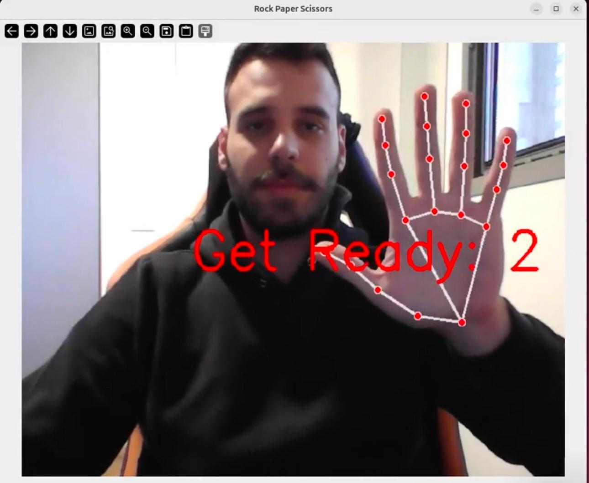

A Little About Me
Hello, my name is Ron Mordukhovich. I am currently a third-year Computer Science student
with a passion for creating, whether it’s building from physical components or coding
interesting programs.
I enjoy exploring diverse areas of interest, diving into new
challenges, and discovering potential hobbies along the way.
I am a fast and motivated learner who thrives on solving problems and expanding my
knowledge daily through hands-on experience. On the right, you can explore some of my
hobbies that extend beyond my professional pursuits.
Enduro Riding
Hiking
Snowboarding
Minecraft
Work
Realtime Object Detection Application

This application accepts input from a media file or a live stream from the webcam, processes each frame in real-time, and streams the output with highlighted detections, including object labels and accuracy, over the source media.
Technologys:
PyTorch: For supporting the detection model.
OpenCV: For displaying the processed video.
GStreamer: For managing video files and cameras.
PyGObject: For managing GStreamer elements in Python.
Python: As the main programming language.
Hand Gesture-Based Rock-Paper-Scissors
This application accepts input from a live webcam stream and allows users to play Rock-Paper-Scissors using hand gestures. It leverages computer vision to detect and interpret the player's hand gestures, enabling a seamless and interactive gaming experience.
Technologys:
PyTorch: For supporting the detection model.
OpenCV: For displaying the processed video.
MediaPipe: Utilized for integrating and leveraging MediaPipe's pre-trained Hand Gesture model.
Python: As the main programming language.